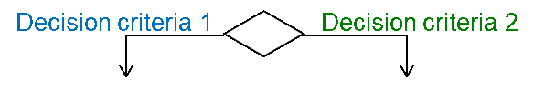
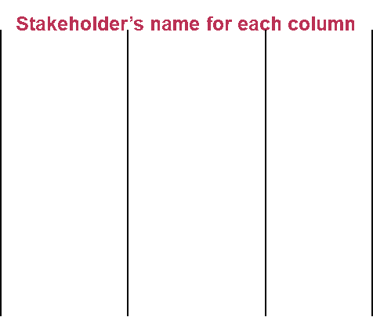
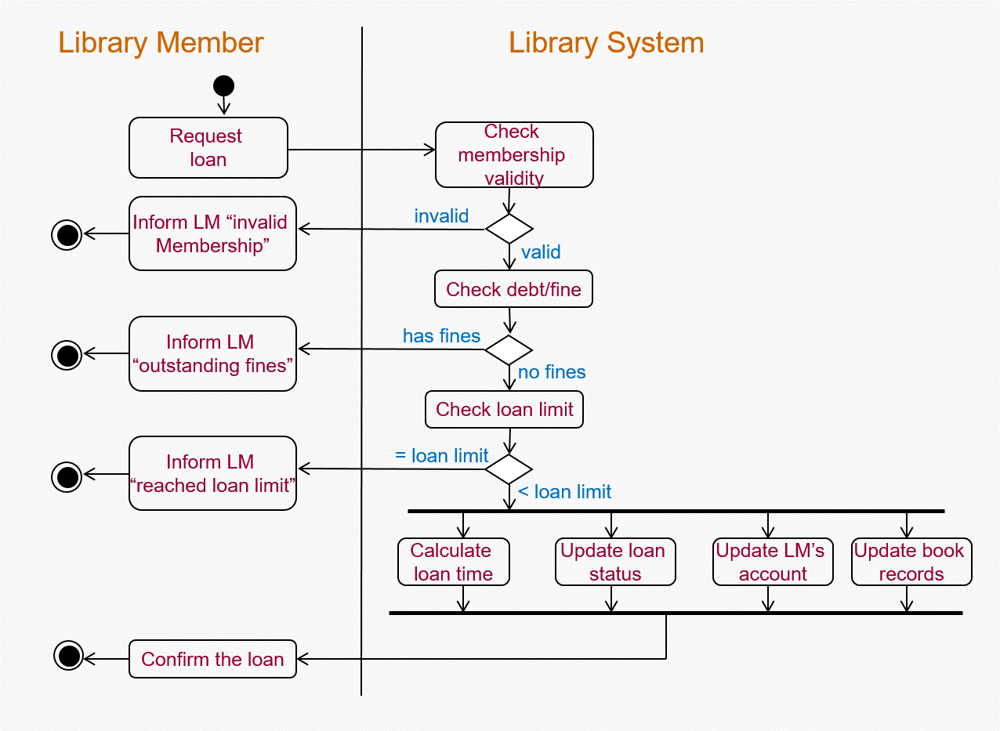

System Designs
Developing Activity Diagram
Activity in reality would be the business process that establishing the steps to creating the product.
Representation of a Process

Detailing activities in the Process
Activity Diagrams are designed so that the behavioural steps involved in a process that produce and consume artefact and information can be represented.
They are created for the views of ‘as-is’ and ‘to-be’ business processes
Notations of Activity Diagrams:
| An Activity node will contain a set of actions and be labelled by its name |
|---|
| A control flow shows a sequence of execution |
 |
| An initial-activity node will show the start of the set of activities |
| A finish-activity node will stop the specific control flow |
| Decision node will be used to ensure the activity flows through one path controlled by conditions |
|  |
| A merge node will be used to bring back together different decision paths |
 |
| A fork node will be used to split behaviour into a set of parallel or concurrent flows of activity |
| A join node will be used to bring back together a set of parallel of concurrent flows of activities |
 |
| A swimlane will be used to break up an activity diagram into rows and columns to assign the individual activity to the responsible role of a stakeholder who executes the activities. |
|  |
Other Elements in the Activity Diagrams which have to considered
- Context which is the scope of the activities carried out
- Stakeholders are any users that are using the product, this can be human or non-human (other applications)
- Basic rules and constraints of the companies
Activity Diagrams are useful
- as they show how the use cases will achieve the goals
- shows who is responsible for which activity
- shows in great detail all the dependencies and alternatives for the activity
However, it does not reveal the messaging between the objects and the timings for each of the activities.
An Example of each type of Model, click on the image to enlarge it.
| Activity Diagram | Use Case Model | Process Model | Objects Mapping |
|---|---|---|---|

|

|
 |

|
×